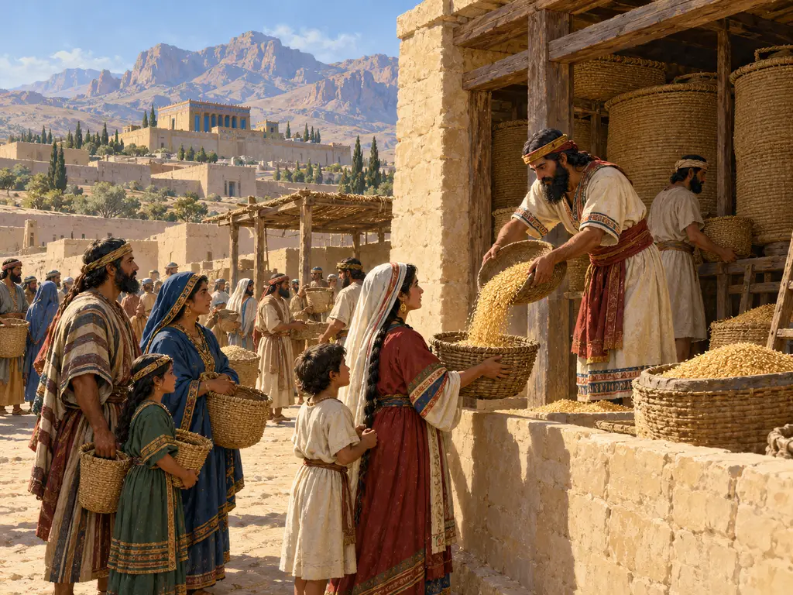
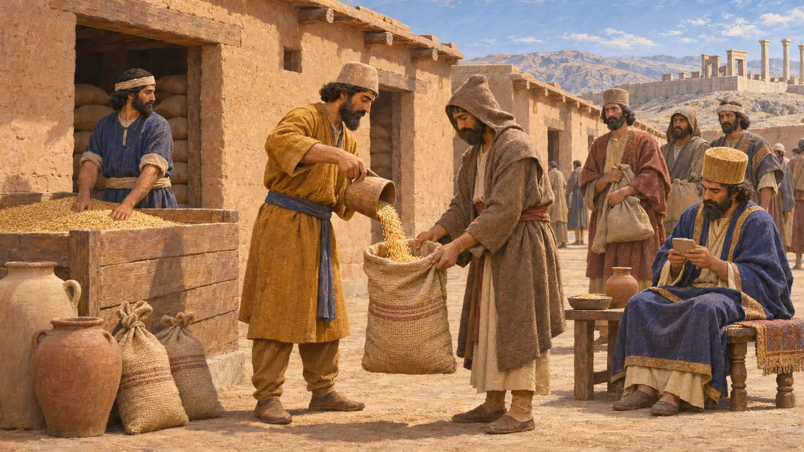
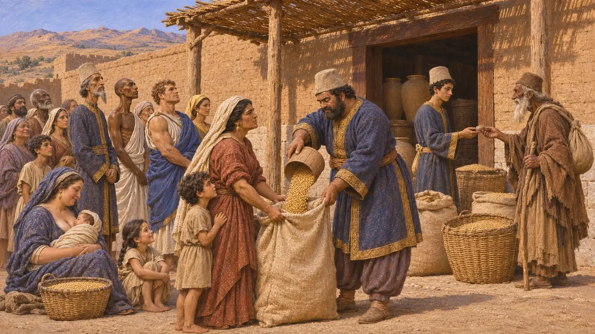
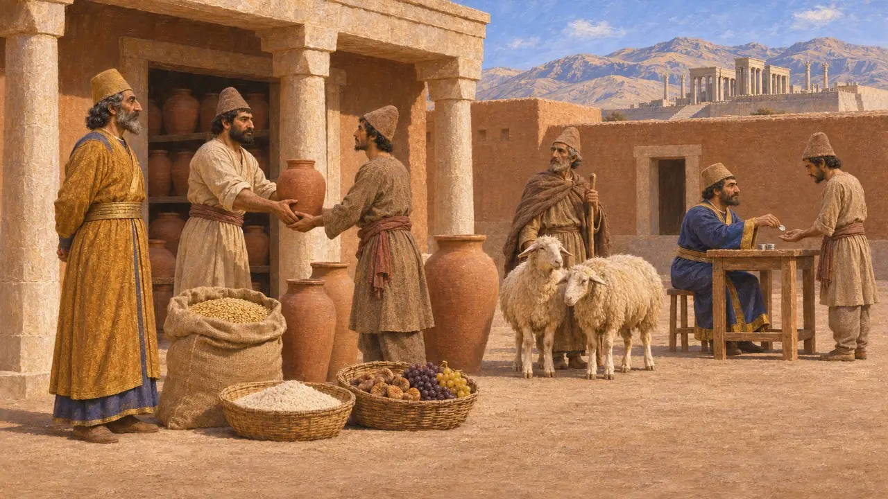
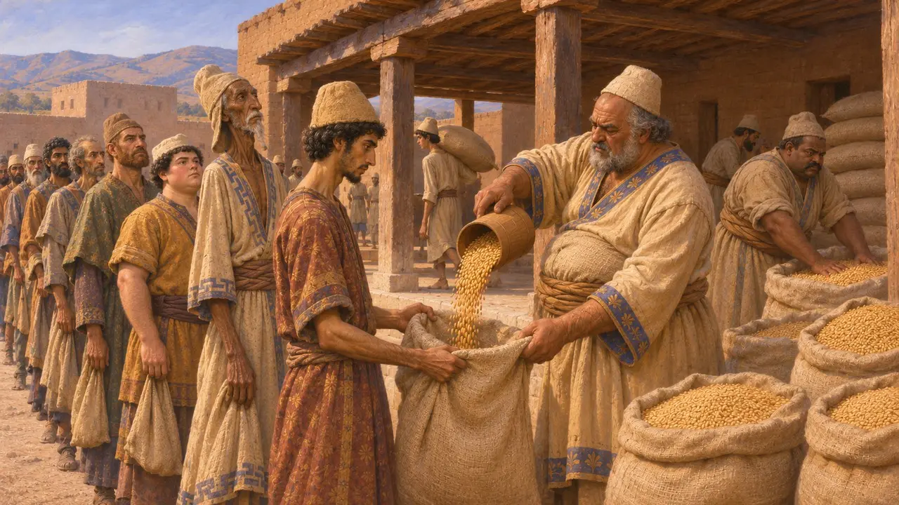
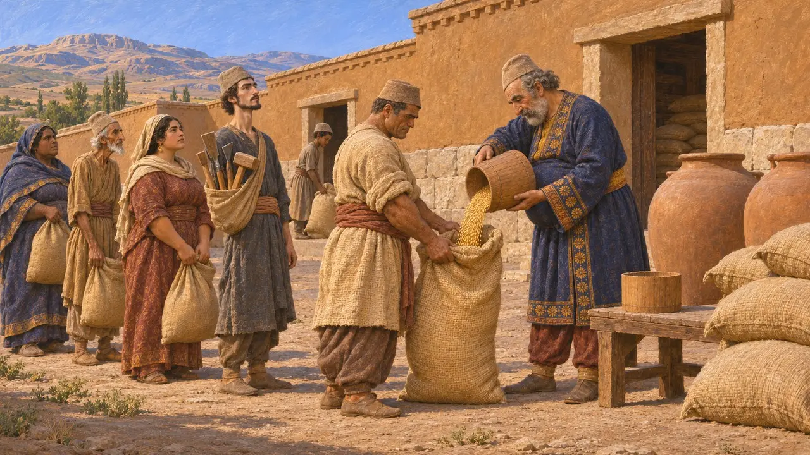

Enzyklopädie › Königliche Befehle

Getreidespende
Königliche Rationen von Gerste und anderen Gütern in der Persis, etwa 509–493 v. Chr.
Die Verwaltung des persischen Königs ernährte die Menschen, die für sie arbeiteten. Tontäfelchen aus Persepolis verzeichnen monatliche Rationen von Gerste, dazu Wein, Bier und Mehl, die an Arbeiter, Beamte und Reisende in der Persis und den angrenzenden Gebieten in Richtung Elam ausgegeben wurden. Diese Rationen waren eine Form der Entlohnung für den königlichen Dienst, keine kostenlose Zuteilung an jeden Haushalt. Sie zeigen, wie die Krone die Ernte ihrer Güter in Arbeitskraft verwandelte.
Im Spiel: Eine Daueranordnung auf der Seite „Steuern“ des Rechnungsbuchs lässt jedes bewohnte Haus monatlich Gerste beziehen; wird sie erfüllt, steigt die Gunst des Königs. Die Tafeln verzeichnen Rationen für Arbeiter und Beamte im königlichen Dienst, nicht für jeden Haushalt.

Gerste, Monat für Monat gezählt
Zeitgenössisch belegtDie Persepolis-Festungstäfelchen sind Tausende überwiegend elamischer Tondokumente, die 1933–34 gefunden wurden. Sie umfassen ungefähr die Jahre 509 v. Chr. bis 493 v. Chr., also einen Teil der Regierungszeit des Dareios. Viele verzeichnen Gerste, die Monat für Monat aus königlichen Vorräten entnommen und ausgegeben wurde, samt den zuständigen Beamten, den Empfängern und den Mengen, gemessen in Einheiten von etwa einem Liter. Eine übliche Monatsration für einen erwachsenen Mann betrug rund dreißig dieser Einheiten.
R. T. Hallock, Persepolis Fortification Tablets, 1969

Wer die Rationen empfing
Zeitgenössisch belegtEin Großteil des Getreides ging an Arbeiter, die die Täfelchen kurtaš nennen, nach Handwerk und Herkunft in Gruppen gegliedert, darunter Perser, Lyder, Ägypter und Ionier. Männer, Frauen und Kinder werden genannt, die Mengen nach Alter, Geschlecht und Fertigkeit abgestuft. Manche Frauen erhielten nach einer Geburt zusätzliche Rationen, mehr für einen Jungen als für ein Mädchen. Reisende auf den Straßen bezogen an den Stationen Tagesrationen, indem sie eine gesiegelte Vollmacht vorzeigten.
M. Brosius, Women in Ancient Persia, 1996

Wein, Bier, Schafe und Silber
Zeitgenössisch belegtGetreide bildete die Grundlage, doch dasselbe System gab auch Wein, Bier, Mehl, Obst und Vieh aus, oft an Beamte, zu besonderen Anlässen oder als Opfergaben für die Götter. Über weite Teile des vom Archiv erfassten Zeitraums unterstand das Netz Parnakka, einem hochrangigen Adligen und wohl einem Onkel des Dareios, der die Wirtschaft des Königs in der Persis leitete. Die Schatzhaustafeln von Persepolis, ein späteres Archiv, zeigen manche Arbeiter, die einen Teil ihres Lohns statt in Waren in Silber erhielten.
G. G. Cameron, Persepolis Treasury Tablets, 1948

Herodot berechnet das Brot des Heeres
Antiker BerichtHerodot versucht zu berechnen, wie viel Getreide das Heer des Xerxes im Jahr 480 v. Chr. verbrauchte, und geht dabei von einer Tagesration von einer Choinix Weizen pro Mann aus, etwa einem Liter. Seine Summe beruht auf seinen eigenen Heereszahlen, die Historiker für stark übertrieben halten. Dennoch zeigt die Stelle, dass die Griechen sich das persische Heer als eine Masse vorstellten, die der König aus geordneten Vorräten ernährte.
Herodotus 7.187

Entlohnte Arbeiter oder gebundene Diener
UmstrittenHistoriker streiten noch immer über die Stellung der kurtaš. Manche sehen in ihnen Abhängige oder Deportierte, die an königliche Güter gebunden waren. Andere betonen, dass viele von ihnen qualifiziert und beweglich waren und unterschiedlich entlohnt wurden, eher Lohnarbeitern vergleichbar. Unklar ist auch, ob die Rationen ihren gesamten Lebensunterhalt bildeten oder nur eine Ergänzung, und wie weit das aus der Persis bekannte System in anderen Provinzen galt.
P. Briant, From Cyrus to Alexander, 2002
Quellen
- R. T. Hallock, Persepolis Fortification Tablets, 1969
- W. Henkelman, The Other Gods Who Are, 2008
- P. Briant, From Cyrus to Alexander, 2002
- M. Brosius, Women in Ancient Persia, 1996
- G. G. Cameron, Persepolis Treasury Tablets, 1948
- Herodotus 7.187